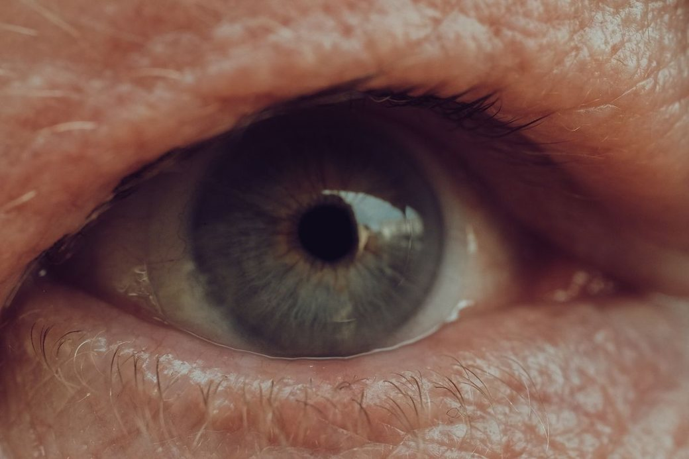

Laser vision correction for short-sight, long-sight and astigmatism. A detailed eye assessment first confirms whether LASIK is suitable for you.

The cornea Reshaped by laser to focus lightLASIK is a laser treatment that reshapes the cornea, the clear front window of the eye, so that light focuses correctly on the retina.
When the cornea is too steep, too flat or unevenly curved, images arrive out of focus and you need glasses or contact lenses to see clearly. LASIK corrects that curve directly on the eye.
A thin protective flap is created on the surface of the cornea, a laser precisely reshapes the tissue beneath, and the flap is laid back in place, where it heals naturally without stitches.
LASIK can correct the most common focusing problems. It may help if you have:
Distant objects look blurred while near ones are clear.
Near objects are harder to focus on than distant ones.
An unevenly curved cornea makes vision blurred or stretched.
The eyes have usually finished growing and changing.
Glasses or lenses have stayed about the same for a year or more.
No active eye disease, infection or significant dry eye.
Not everyone is suited to LASIK. A detailed assessment measures the thickness and shape of your cornea and checks the overall health of your eyes before any treatment is recommended.
Not suitable for LASIK? You still have options. Your ophthalmologist can discuss other ways to correct your vision, including glasses and specialty contact lenses.
LASIK may not be advised if you have
Corneal mapping and thickness measurements to check suitability.
Laser treatment planned around your eye measurements.
Assessment and treatment by our ophthalmologists.
Check-ups after treatment to make sure your eyes heal well.
A full eye examination and painless scans of your cornea to confirm whether LASIK suits you.
Numbing drops are placed in your eyes. You stay awake and comfortable throughout.
A thin flap is created, the laser reshapes the cornea beneath it, and the flap is laid back. It takes only minutes per eye.
After a short rest you go home the same day with protective shields and eye drops. Someone should drive you.
Eyes may feel gritty or watery and vision may be hazy. Rest and keep your eyes closed as much as possible.
Vision usually becomes clear quickly. Use your eye drops exactly as prescribed.
Most daily activities return to normal. Vision can fluctuate slightly while the eye settles.
Healing is complete and your vision is fully stable.
Do
Avoid
No. Numbing drops are used, so most people feel only light pressure. The eyes may feel gritty or scratchy for a few hours afterwards.
The laser treatment itself takes only minutes per eye. Including preparation and rest, plan to spend a few hours at the centre.
Often yes, but your ophthalmologist will decide what is best for you after your assessment.
Most people no longer need glasses for distance. Reading glasses may still be needed later in life, as the eye's focusing naturally changes with age.
The reshaping of the cornea is permanent, but the eye can still change naturally over the years, for example with age or cataracts.
Many people return to work within a few days. Please don't drive until your doctor confirms your vision meets the driving standard.
Book a LASIK assessment with our ophthalmologists. We'll check whether laser vision correction is suitable for you and explain your options.
Sunday to Friday · 9 am – 1 pm, 4 pm – 9 pm